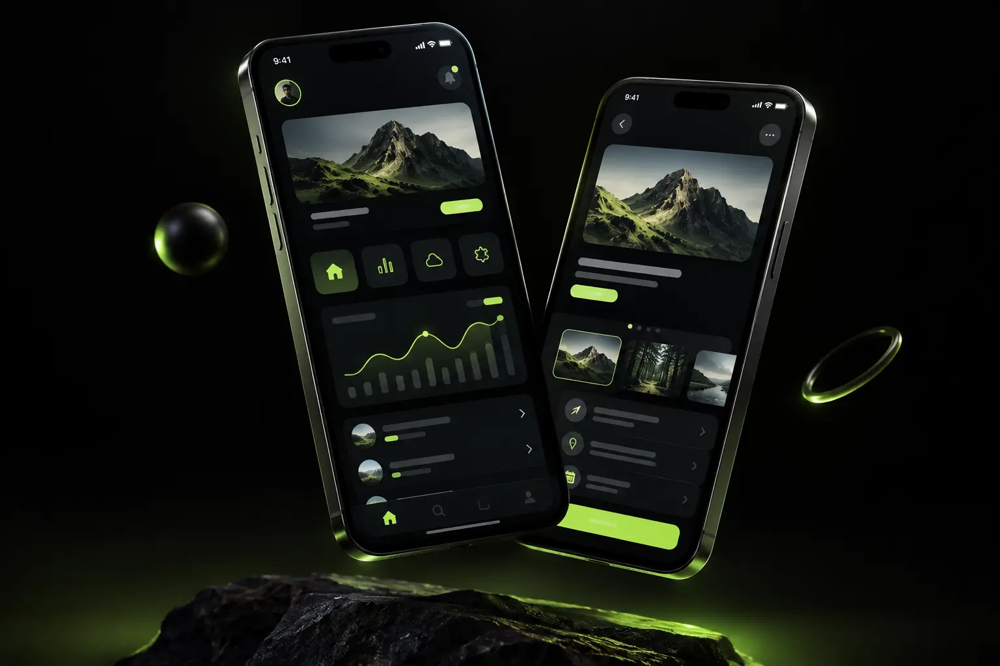

SAMSARATECH / MOBILE-FIRST
Better experiences
on every screen.
We design for smaller screens first, then scale intelligently for tablets, desktops and every device in between.

Responsive from the first wireframe
Mobile-first thinking improves performance, accessibility and usability while giving your customers a consistent experience wherever they meet your brand.
Make it mobile-first ->